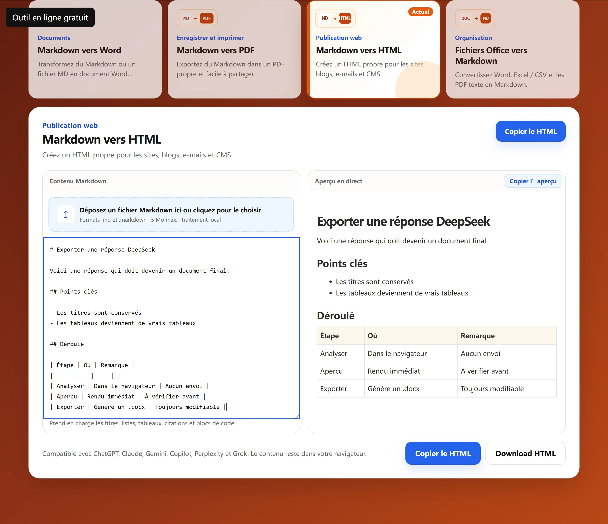

Markdown vers HTML
Convertir du Markdown en HTML propre
Le HTML est utile quand du contenu Markdown doit passer dans un CMS, un blog, un éditeur d’e-mails ou une page statique qui n’accepte pas le Markdown directement.

Ce que contient réellement le téléchargement
Le téléchargement est un document HTML5 complet, pas un fragment. Il contient le doctype, un attribut lang, la déclaration UTF-8, une balise viewport et un élément title. Votre contenu converti se trouve dans le body.
Ce qu’il laisse de côté volontairement
- Les feuilles de styles.Aucun CSS n’est attaché : la page hérite de ce que le site de destination fournit.
- Les scripts.Le résultat est un balisage statique, sans comportement associé.
- L’habillage du site.Aucune navigation, pied de page ou marque Aixuno n’est inclus.
Le fichier devient ainsi un point de départ pour un gabarit CMS plutôt qu’une page finie — c’est généralement ce que l’on veut, car coller du HTML stylé dans un site existant finit par contrarier son propre système de design.
Quand le HTML est la bonne cible
| Destination | Pourquoi le HTML convient | À ajuster en premier |
|---|---|---|
| Blog ou CMS | Les balises sémantiques correspondent à la plupart des éditeurs | Retirez l’enveloppe de document si votre CMS en fournit une |
| Gabarit d’e-mail | Titres et listes survivent | Les clients mail exigent du CSS inline, à ajouter séparément |
| Site statique | Prêt à enregistrer comme partial | Retirez le doctype pour l’intégrer dans un gabarit existant |
Questions sur le HTML obtenu
L’export inclut-il du CSS ?
Non. Le fichier ne porte que la structure : il hérite du style du site où il est placé.
Puis-je coller le résultat dans un CMS ?
Oui. Retirez le doctype et l’enveloppe body quand le CMS fournit déjà le squelette du document.
Le fichier est-il valide seul ?
Oui. C’est un document HTML5 complet, avec doctype, charset, viewport et title.
Si le HTML n’est pas correct
- La page n’a aucun style.C’est attendu : aucun CSS n’est inclus. Ajoutez la feuille de styles à la destination.
- Des balises apparaissent en texte visible.Les chevrons étaient échappés dans la source : ils s’affichent littéralement au lieu d’agir comme balisage.
- La mise en page casse dans un CMS.Le CMS a imbriqué un document complet dans sa propre page ; ne conservez que le contenu du body.